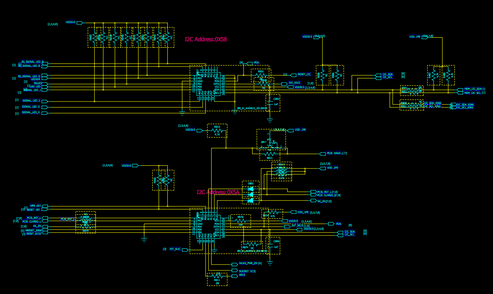

硬件连接图
AW9523 是一款 IIC 串口转 16 路 GPIO 并口控制器，8 路 PUSH-PULL 驱动，8 路OPEN-DRAIN 或 PUSH-PULL 驱动可选。芯片上电后，GPIO 口为输出状态，中断使能有效。输出电平状态取决于两位 IIC 地址引脚。AW9523 支持引脚关断功能(PDN)，低有效。重新使能后，内部电路处于默认状态。对每一个输入信号作 8us 去抖动处理，当中断使能时，输入状态变化产生中断请求(INTN)。中断为开漏输出，低有效。通过接口读输入状态寄存器清除中断

芯片介绍
寄存器列表
| ADDR | W/R | Default Value(HEX) | Function | Description |
|---|---|---|---|---|
| 00H | R | xxH | INPUT_PORT0 | P0x口输入状态 |
| 01H | R | xxH | INPUT_PORT1 | P1x 口输入状态 |
| 02H | W/R | xxH | OUTPUT_PORT0 | P0x口输出驱动逻辑，默认值与i2c地址引脚相关 |
| 03H | W/R | xxH | OUTPUT_PORT0 | P1x口输出驱动逻辑，默认值与i2c地址引脚相关 |
| 04H | W/R | 00H | CFG_PORT0 | P0x 口输入或输出选择 |
| 05H | W/R | 00H | CFG_PORT1 | P1x 口输入或输出选择 |
| 06H | W/R | 00H | INTN_PORT0 | P0x 口中断使能 |
| 07H | W/R | 00H | INTN_PORT1 | P1x 口中断使能 |
| 08H-10H | - | - | - | - |
| 11H | W/R | 00H | GPOMD | P0x口选择OPEN-DRAIN驱动或 PUSH-PULL驱动 |
| 12H-7EH | - | - | - | - |
| 7FH | W | 00H | RESET | 写00H复位 |
GPIO输入输出方向选择
CFG_PORT0 和 CFG_PORT1 设定端口为输入、输出状态。寄存器每一比特对应某个 GPIO端口，该位置’1’代表输入状态，置’0’代表输出状态。AW9523 上电后，默认为输出状态。
GPIO输出驱动
P0x 端口默认为 OPEN-DRAIN 驱动，可通过配置 GPOMD 寄存器设定为 PUSH-PULL 驱动。P1x 端口为 PUSH-PULL 驱动。开漏输出时，通过外部电阻上拉驱动高电平。
GPIO 口默认驱动逻辑取决于 AD0/AD1 两个引脚
| AD1 | AD0 | P17 | P16 | P15 | P14 | P13 | P12 | P11 | P10 | P07 | P06 | P05 | P04 | P03 | P02 | P01 | P00 |
|---|---|---|---|---|---|---|---|---|---|---|---|---|---|---|---|---|---|
| GND | GND | 0 | 0 | 0 | 0 | 0 | 0 | 0 | 0 | 0 | 0 | 0 | 0 | 0 | 0 | 0 | 0 |
| GND | VCC | 0 | 0 | 0 | 0 | 1 | 1 | 1 | 1 | 0 | 0 | 0 | 0 | 1 | 1 | 1 | 1 |
| VCC | GND | 1 | 1 | 1 | 1 | 0 | 0 | 0 | 0 | 1 | 1 | 1 | 1 | 0 | 0 | 0 | 0 |
| VCC | VCC | 1 | 1 | 1 | 1 | 1 | 1 | 1 | 1 | 1 | 1 | 1 | 1 | 1 | 1 | 1 | 1 |
GPIO输入状态查询
通过 IIC 接口读 INPUT_PORT0 和 INPUT_PORT1 可获得当前 GPIO 端口逻辑状态。AW9523 GPIO 口支持 1.8V 高电平输入。
中断功能
当 GPIO 口配置成输入状态，且使能中断功能后，该 IO 口的输入状态变化将产生中断请求。默认情况下，16 路 GPIO 口中断使能。AW9523 时刻监测输入状态，当检测到 IO 口逻辑电平变化，内部电路进行 8us 去抖动处理。若 8us 后，确认该状态变化，则中断引脚上电平拉低。
通过读 INPUT_PORT0 和 INPUT_PORT1 寄存器清除中断。由 P0x 变化产生的中断，必须读INPUT_PORT0 寄存器清除；由 P1x 变化产生的中断，必须读 INPUT_PORT1 寄存器清除。不可
跨组清除中断。
复位功能
AW9523 支持引脚复位和软复位。拉低 PDN 引脚，AW9523 内部电路处于复位状态直至 PDN引脚拉高。或通过 IIC 接口对 RESET 寄存器写入数据 00H，内部电路也将完成一次复位。
寄存器详细描述
INPUT_PORT0(00H) ，输入状态寄存器
| 位 | 名称 | 描述 | 默认值 |
|---|---|---|---|
| D7 | INPUT_P07 | P07 引脚当前逻辑状态，0-低电平，1-高电平 | X |
| D6 | INPUT_P06 | P06 引脚当前逻辑状态，0-低电平，1-高电平 | X |
| D5 | INPUT_P05 | P05 引脚当前逻辑状态，0-低电平，1-高电平 | X |
| D4 | INPUT_P04 | P04 引脚当前逻辑状态，0-低电平，1-高电平 | X |
| D3 | INPUT_P03 | P03 引脚当前逻辑状态，0-低电平，1-高电平 | X |
| D2 | INPUT_P02 | P02 引脚当前逻辑状态，0-低电平，1-高电平 | X |
| D1 | INPUT_P01 | P01 引脚当前逻辑状态，0-低电平，1-高电平 | X |
| D0 | INPUT_P00 | P00 引脚当前逻辑状态，0-低电平，1-高电平 | X |
INPUT_PORT1(01H)，输入状态寄存器
| 位 | 名称 | 描述 | 默认值 |
|---|---|---|---|
| D7 | INPUT_P17 | P17 引脚当前逻辑状态，0-低电平，1-高电平 | X |
| D6 | INPUT_P16 | P16 引脚当前逻辑状态，0-低电平，1-高电平 | X |
| D5 | INPUT_P15 | P15 引脚当前逻辑状态，0-低电平，1-高电平 | X |
| D4 | INPUT_P14 | P14 引脚当前逻辑状态，0-低电平，1-高电平 | X |
| D3 | INPUT_P13 | P13 引脚当前逻辑状态，0-低电平，1-高电平 | X |
| D2 | INPUT_P12 | P12 引脚当前逻辑状态，0-低电平，1-高电平 | X |
| D1 | INPUT_P11 | P11 引脚当前逻辑状态，0-低电平，1-高电平 | X |
| D0 | INPUT_P10 | P10 引脚当前逻辑状态，0-低电平，1-高电平 | X |
OUTPUT_PORT0(02H)，输出状态寄存器
AD1/AD0外接GND/GND时，输出默认值
| 位 | 名称 | 描述 | 默认值 |
|---|---|---|---|
| D7 | OUTPUT_P07 | P07 引脚输出状态，0-低电平，1-高电平 | 0 |
| D6 | OUTPUT_P06 | P06 引脚输出状态，0-低电平，1-高电平 | 0 |
| D5 | OUTPUT_P05 | P05 引脚输出状态，0-低电平，1-高电平 | 0 |
| D4 | OUTPUT_P04 | P04 引脚输出状态，0-低电平，1-高电平 | 0 |
| D3 | OUTPUT_P03 | P03 引脚输出状态，0-低电平，1-高电平 | 0 |
| D2 | OUTPUT_P02 | P02 引脚输出状态，0-低电平，1-高电平 | 0 |
| D1 | OUTPUT_P01 | P01 引脚输出状态，0-低电平，1-高电平 | 0 |
| D0 | OUTPUT_P00 | P00 引脚输出状态，0-低电平，1-高电平 | 0 |
OUTPUT_PORT1(03H)，输出状态寄存器
AD1/AD0外接GND/GND时，输出默认值
| 位 | 名称 | 描述 | 默认值 |
|---|---|---|---|
| D7 | OUTPUT_P17 | P17 引脚输出状态，0-低电平，1-高电平 | 0 |
| D6 | OUTPUT_P16 | P16 引脚输出状态，0-低电平，1-高电平 | 0 |
| D5 | OUTPUT_P15 | P15 引脚输出状态，0-低电平，1-高电平 | 0 |
| D4 | OUTPUT_P14 | P14 引脚输出状态，0-低电平，1-高电平 | 0 |
| D3 | OUTPUT_P13 | P13 引脚输出状态，0-低电平，1-高电平 | 0 |
| D2 | OUTPUT_P12 | P12 引脚输出状态，0-低电平，1-高电平 | 0 |
| D1 | INPUT_P11 | P11 引脚输出状态，0-低电平，1-高电平 | 0 |
| D0 | OUTPUT_P10 | P10 引脚输出状态，0-低电平，1-高电平 | 0 |
INTN_PORT0(06H)，中断使能寄存器
| 位 | 名称 | 描述 | 默认值 |
|---|---|---|---|
| D7 | INTN_P07 | P07 引脚中断使能控制，0-使能，1-关断 | 0 |
| D6 | INTN_P06 | P06 引脚中断使能控制，0-使能，1-关断 | 0 |
| D5 | INTN_P05 | P05 引脚中断使能控制，0-使能，1-关断 | 0 |
| D4 | INTN_P04 | P04 引脚中断使能控制，0-使能，1-关断 | 0 |
| D3 | INTN_P03 | P03 引脚中断使能控制，0-使能，1-关断 | 0 |
| D2 | INTN_P02 | P02 引脚中断使能控制，0-使能，1-关断 | 0 |
| D1 | INTN_P01 | P01 引脚中断使能控制，0-使能，1-关断 | 0 |
| D0 | INTN_P00 | P00 引脚中断使能控制，0-使能，1-关断 | 0 |
INTN_PORT1(07H)，中断使能寄存器
| 位 | 名称 | 描述 | 默认值 |
|---|---|---|---|
| D7 | INTN_P17 | P17 引脚中断使能控制，0-使能，1-关断 | 0 |
| D6 | INTN_P16 | P16 引脚中断使能控制，0-使能，1-关断 | 0 |
| D5 | INTN_P15 | P15 引脚中断使能控制，0-使能，1-关断 | 0 |
| D4 | INTN_P14 | P14 引脚中断使能控制，0-使能，1-关断 | 0 |
| D3 | INTN_P13 | P13 引脚中断使能控制，0-使能，1-关断 | 0 |
| D2 | INTN_P12 | P12 引脚中断使能控制，0-使能，1-关断 | 0 |
| D1 | INTN_P11 | P11 引脚中断使能控制，0-使能，1-关断 | 0 |
| D0 | INTN_P10 | P10 引脚中断使能控制，0-使能，1-关断 | 0 |
GPIO配置表
AW9523(0x58)主要是用来连接各种灯的
| AW9523(0X58) | 引脚连接 |
|---|---|
| P00 | 3G_SIGNAL_LED_B |
| P01 | 3G_SIGNAL_LED_R |
| P02 | 3G_SIGNAL_LED_G |
| P03 | LED2G4 |
| P04 | 5GLED |
| P05 | LAN LED |
| P06 | SIGNAL_LED_1 |
| P07 | SIGNAL_LED_2 |
| P14 | SIGNAL_LED_3 |
| P15 | SIGNAL_LED_4 |
| SCL | GPIO11(mdm9x40 i2c_3) |
| SDA | GPIO10(mdm9x40 i2c_3) |
| PDN | GPIO99(mdm9x40) |
AW9523(0x5A)主要是用来连接按键的
| AW9523(0X5A) | 引脚连接 |
|---|---|
| P00 | WPS_KEY |
| P01 | RESET_KEY |
| SCL | GPIO11(mdm9x40 i2c_3) |
| SDA | GPIO10(mdm9x40 i2c_3) |
| INTN | GPIO94(mdm9x40) |
| PDN | GPIO99(mdm9x40) |
设备树配置
相关的文件：
- kernel/arch/arm/boot/dts/qcom/mdm9640.dtsi
- kernel/arch/arm/boot/dts/qcom/mdm9640-pinctrl.dtsi
1 | aw9523_pins_rst0: aw9523_pins_rst0 { |
1 | &i2c_3 { |
AW9523驱动流程
相关文件：
- /kernel/driver/i2c/aw9523/aw9523_key.c
- /kernel/driver/i2c/aw9523/aw9523_led.c
1 | /* seset & int Pins */ |
pinctrl子系统，选择rst引脚状态
1 | /* key report */ |
注册input子系统
源代码
1 | /* |